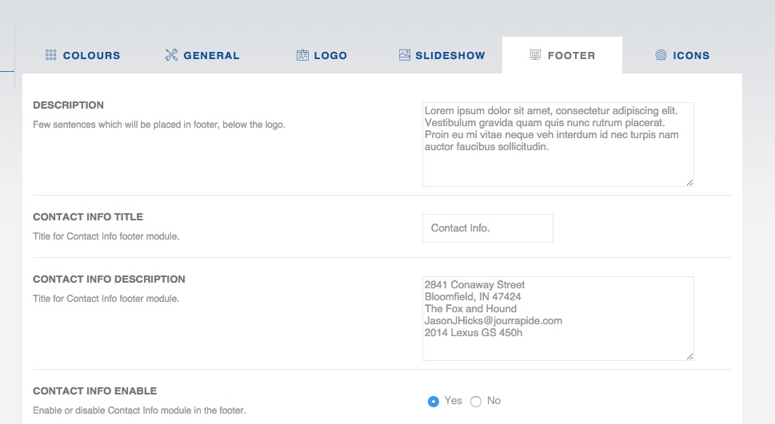

This section covers configuration of bottom footer area of the forum. It differs a little bit from other section. Here you can customize almost every aspect of footer area. Starting from module titles, ending with content.

Feedburner is a free, Google-owned service that provides great feed statistics and services to bloggers and other feed publishers.
Quick instructions how to use Feedburner email subscription:
In the copied code, you will find something like this:
onsubmit="window.open('https://feedburner.google.com/fb/a/mailverify?uri=YOUR_ID_HERE', 'popupwindow', Copy your id after uri= and paste it into Devlom Configurator FEEDBURNER field.